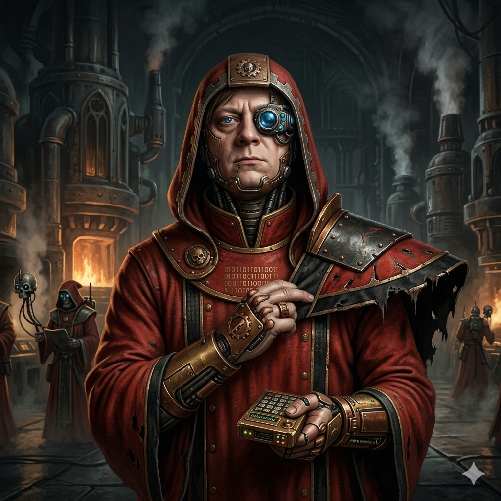

++ Inquisitorial Dossier · Clearance: Vermilion ++
Subject deemed loyal · Disseminate on a need-to-know basis

Pict-capture · Authenticity verified
☠ Subject Designation ☠
Magos Artem of House Domozhakov
Arch-Magos of Personalization · Lord of the Growth-Forges · Keeper of the Sacred Unit Economics · He Who Binds Machine Spirits to the Will of Commerce
Active Crusade: Magnit Omni-Forge
Vox-channel open
Sanctioned by the Adeptus Productus
☠ ⚙ ☠
For nine Terran years the subject has marched at the intersection of the Machine Cult, growth strategy, and commercial accountability — transmuting raw data into tithes of GMV, ARPPU, Reach, and Retention. Twenty million souls receive his personalized litanies each lunar cycle. He builds from nothing unto glory, parts seas of legal complexity, and scales victorious ordeals across entire sector populations.
✠
Chronicle of Campaigns
The Magnit Omni-Forge
Magos Personalis — Master of the Forge's Indulgences
025.M3 — Present Day · Congregation: 20 million souls
Dispatched to reform the Omni-Forge's rites under the CHANGE doctrine: casting down the crude segment-litanies of old and raising in their place offers chosen for each soul individually, as the Omnissiah intends.
- A tenfold tithe was rendered unto the forge when the look-alike augur arrays singled out souls ripe for subscription: 2 million thrones from the unblessed control flock against 30 million from the chosen.
- The congregation of Cashback Indulgences was doubled — from 4.7 to 10 million souls — when the 20 common litanies were expanded to 200, each soul receiving the indulgence the machine spirit deemed most pleasing.
- The Rite of the Seven-Day March was codified: from hypothesis-scriptum to battlefield trial in a single Terran week, where lesser forges toil for months.
- A score of trials by ordeal were conducted in half a Terran year; seven were blessed with statistical significance and their victories proclaimed across the entire flock.
- The Great Rework of 026.M3 raised the indulgence-categories to 1,068, granting the forge dominion over the economics of every single soul — expenditure fell, yet ARPPU did not waver.
The Sber Sector Crusade
Lord-Lieutenant of Personalization — Bearer of the Unified Platform Standard
022.M3 — 025.M3 · Three and a half Terran years of unbroken campaign
Charged with the speed of the crusade and the weight of its tithes, he carried the light of personalization to eleven worlds and more of the Sber sub-sector: the Megamarket Hive, Zvuk the Singing World, the picture-shrine OKKO, the cartographer-temple 2GIS, and others whose names are recorded in the sector annals.
- The Megamarket Hive yielded +5% GMV from the recommendation-shrines raised in its homepage, cart, and product-reliquaries — whereupon the hive cast out its xenos SaaS mercenaries, their contracts burned after trial by combat (A/B).
- The Power of Sound was awakened upon Zvuk: souls lingered in communion with the Singing World for 4.2 hours at a stretch, deaf to all distraction.
- Transformer-pattern augurs were consecrated in the 2GIS cartographer-temple: twice the coverage, and click-rites multiplied 1.5-fold.
- The pleasure-world MRIYA rendered 2.4× GMV when personalized offerings were beamed unto its SberTV vox-screens.
- The Codex Recommendatus was authored — "Rules for the Use of Recommendation Technologies" — halving the approval-rites of the Administratum scribes; the Codex is now law across several worlds of the sector.
- The four-week miracle of Netologia: from brief-scroll to battle-ready A/B engine faster than any campaign before it.
The Vigilia Machina (Antison)
Envoy-Procurator — Herald of the Watching Auspex
019.M3 — 021.M3 · The auspex that guards the transport-serfs from slumber
Bore the auspex arrays that watch over the vigilance of convoy crews unto the great merchant houses, securing pilots, pacts, and patronage for the fledgling forge.
- Five great houses entered pilot communion: Unilever, Norilsk Nickel, LENTA, SladkayaZhizn+, and Kastor Group of the hazardous cargoes; the houses Sinara and Renaissance pledged partnership.
- He survived the Sber500 Gauntlet — from supplicant to Demo Day — and pitched before High Lord Gref himself and the assembled ecosystem lords, earning renown and open gates.
- The Conclave of Rusbase, 021.M3, proclaimed his Mosgortrans war-record the finest in all the Logistics category.
- The Skolkovo Sanctuary granted its writ of residency — exemption from tithes and the keys to the cluster's armories.
- The accelerator-trials of RZhD and the Imperial Post were passed, each converted into pilot campaigns of high promise.
The Brotherhood of the Distributed Cog (Fluence Labs)
Herald to Investors & the Tech-Adept Brotherhood
017.M3 — 019.M3 · Before the Inquisition ruled on the decentralization question
In his youth he spread the word of decentralized cogitation — serverless, masterless, and (the Inquisition notes with suspicion) headless — among investors and the scattered brotherhood of tech-adepts.
- The Great DApp Census drew three thousand eyes within a single day-cycle and was proclaimed by the town criers VentureBeat and Hackernoon to all corners of the segmentum.
- Gatherings of the brotherhood were convened in the hives of Berlin, Minsk, and Moscow, swelling the ranks of the platform's faithful.
☠ ⚙ ☠
The Doctrine
The duty is not to build faster. It is to decree what shall not be built — faster.
Lesser forges chant "ship swiftly, break things, pile feature upon feature" — and so burn four-fifths of their labor as chaff before the Omnissiah. The Magos works by the Principle of the Twentieth Part: structural augury to find the fifth of campaigns that yield four-fifths of the tithe, and a clear, sanctified Decree of Abstention upon all else.
TENET I
Judgment Above Velocity
Any servitor may now conjure a prototype in a night-cycle; judgment remains the rarest relic. The Magos frames every opportunity in thrones and tithes, demands proof of demand before a single cog is cast, and weighs trade-offs in business outcomes — never in delivery dates.
TENET II
The Abacus or the Ordinatus
Most afflictions of a forge are failures of discipline wearing the masks of missing wargear. Four plagues in six are banished by a humble data-slate and an iron operating ritual — decision rights, cadence, ownership. The great engines are awakened only for the two trials that warrant them: the forging of AI-relics, and the divination of insight at scale.
TENET III
The Figure From the Void
An engine is judged by the behavior it binds upon its users, not the litany of its features. Unspoken assumptions are dragged into the light; the seams between domains are scouted; and when a technology makes a thing abundant, the Magos names what becomes scarce — and sells that. Thus the vision endures, and rivals remain a full category behind.
TENET IV
Sense Tempered by Evidence
Probes, not opinions. The unnamed pain is hunted by its three marks: the costly workaround, the apology, the longing for the old ways. Every hypothesis is cast into the trial-pits of adversarial critique; the slain receive epitaphs that none may resurrect them, and the survivors receive the cheapest ordeal that could yet prove them false.
The Litany of the DoctrineFind the new behavior a capability makes possible; name what it renders scarce; assail every assumption with the cheapest disconfirming ordeal — and build the loop that compounds judgment, not output.
✠
Scholum & Sanctioned Knowledge
++ Transmit Astropathic Message ++
Should your forge-world require a fast-paced rite of discovery, a cross-functional warband for a campaign spanning many domains, or judgment upon which AI-relics are blessed and which are mere warp-trickery — the vox-channel stands open.
Open Vox-Channel @orchimada